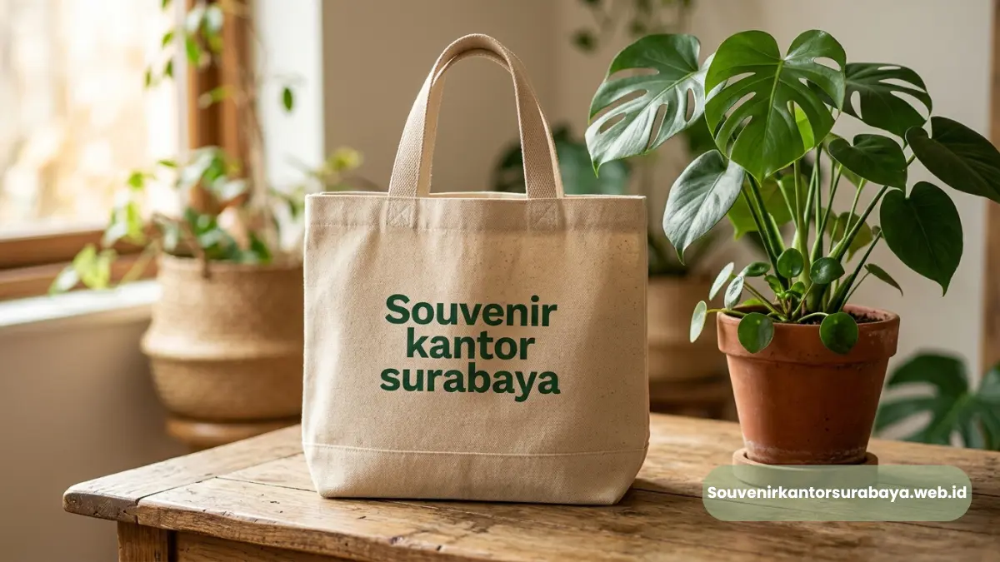
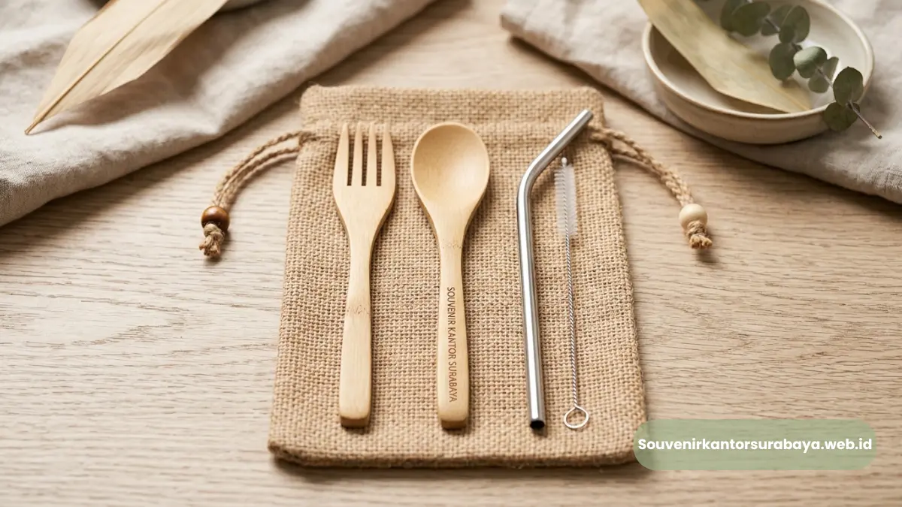

Pilihan Souvenir Kantor Ramah Lingkungan untuk Kampanye CSR Berkelanjutan
Souvenir kantor ramah lingkungan memadukan penerapan material daur ulang dan desain fungsional guna mendukung program keberlanjutan perusahaan serta menurunkan tingkat jejak karbon bisnis.
Peningkatan kesadaran masif akan pelestarian ekosistem lingkungan hidup telah mengubah tren preferensi pengadaan barang korporat secara global dan drastis.
Perusahaan modern di era kini senantiasa memilih jalur suvenir berkelanjutan untuk menyelaraskan presentasi identitas merek dengan implementasi nyata nilai-nilai tanggung jawab sosial perusahaan.
Pemanfaatan ketersediaan merchandise ramah lingkungan tidak hanya mampu menekan angka dampak ekologis, tetapi juga terbukti sangat efektif untuk memperkuat reputasi positif sebuah entitas brand B2B di mata publik luas.
Transisi pergeseran menuju produk berlabel hijau merupakan investasi taktil yang cerdas untuk membangun citra berwibawa.
Publikasi resmi dari Indeks Konsumen Hijau Nielsen pada tahun 2025 secara tegas menunjukkan temuan bahwa 66 persen eksekutif profesional B2B memberikan apresiasi lebih tinggi terhadap merek korporasi yang konsisten menggunakan produk promosional berbahan dasar material limbah yang dapat diperbarui.
Tas Tote Bag Kanvas Daur Ulang untuk Event Seminar Publik
Tote bag kokoh berbahan baku serat kanvas organik murni atau tenunan katun daur ulang menawarkan volume kapasitas besar sebagai wadah angkut dokumen pengganti kantong plastik.
Kampanye masif pengurangan limbah material plastik sekali pakai selalu bermula dari keputusan penyediaan tas jinjing serbaguna berdurabilitas tinggi.
Tas jinjing model tote bag komersial ini ditenun rapat menggunakan helai serat katun tebal yang teruji klinis mampu menahan beban fisik hingga sepuluh kilogram secara aman.
Luasnya hamparan permukaan kain polos tersebut sangat optimal dimanfaatkan untuk penyapuan teknik sablon hijau berbasis larutan air yang dijamin sama sekali tidak beracun.
Aktivitas pemesanan souvenir kantor corporate untuk perusahaan Jakarta pada sektor non-profit kerap kali secara wajib memasukkan produk kanvas ini sebagai paket barang standar untuk memfasilitasi kebutuhan konferensi akbar atau pameran dagang berkelanjutan.
Baca Juga

Set Alat Makan Bambu Portabel untuk Dukungan Gaya Hidup Sehat
Set peralatan bantu makan dari potongan bambu alami yang terintegrasi meliputi sepasang sendok, garpu, dan batang sedotan stainless steel memfasilitasi kebiasaan konsumsi sehat di luar gedung kantor.
Kepemilikan set peralatan utilitas makan pribadi secara cepat telah berubah menjadi tuntutan kebutuhan esensial mutlak bagi setiap kalangan profesional berstatus mobilitas tinggi.
Batang bambu sengaja dipilih secara spesifik berkat karakteristik fitur antibakteri organik bawaannya dan laju tingkat pertumbuhannya yang sangat ekspansif di alam liar.
Kelengkapan set makan mandiri ini disimpan rapi dalam sebuah kantong kecil berbahan kain serat goni yang sangat ringkas untuk masuk saku tas kerja.
Kami melayani pengiriman logistik produk ekologis ini ke Jakarta serta sekitarnya dengan memegang teguh jaminan bahwa semua proses pengukiran logo pabrik tetap memperhatikan ambang batas standar emisi rendah karbon.
Wujudkan segera ambisi komitmen program keberlanjutan CSR bisnis Anda melalui proses pengadaan ragam merchandise ramah lingkungan bermutu bersama Souvenir kantor Surabaya.
Telusuri ketersediaan inventaris katalog hijau kami dan jadwalkan sesi konsultasi teknis terkait kebutuhan suvenir korporat Anda bersama tim spesialis produk andalan kami melalui situs resmi souvenirkantorsurabaya.web.id.
Pesan sekarang juga untuk meraih solusi sarana promosi yang berdampak nyata positif.

Hawa Nadira
Tim penulis CorporateGifts ID berfokus pada strategi souvenir kantor, merchandise korporat, dan inovasi brand untuk klien B2B.
Keahlian: Branding perusahaan, produksi souvenir, paket event, desain materi promosi.
Artikel Terkait

Perlengkapan Seminar Bisnis Surabaya
Ragam perlengkapan esensial untuk mensukseskan acara seminar bisnis dan corporate event.
Baca Selengkapnya
Paket Seminar Kit Lengkap Surabaya
Inspirasi paket seminar kit fungsional untuk menunjang aktivitas peserta acara.
Baca SelengkapnyaMerchandise Surabaya Custom Logo
Pilihan merchandise untuk memperkuat eksposur brand di setiap perhelatan kantor Anda.
Baca Selengkapnya